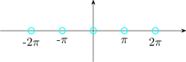

9.4 The Argument Principle
Suppose that \(f\) is meromophic on and inside a simple closed curve \(\Gamma \) with zeroes \(a_i\) and poles \(b_k\hspace {0.2cm} ( 1\leq j\leq l_1,\hspace {0.2cm} 1\leq k \leq l_2)\). Suppose
none of \(a_j\) or \(b_k\) lie on \(\Gamma \). Then
\[\dfrac {1}{2\pi i}\int _{\Gamma } \dfrac {f'(z)}{f(z)}\hspace {0.1cm}dz = M - N\]
where \(M\) is the sum of orders of zeroes at \(a_j\hspace {0.2cm} (1\leq j\leq l_1)\) and \(N\) is the sum of orders of poles at \(b_k \hspace {0.2cm} (1\leq k\leq l_2)\).
Proof
Let \(f(z) = (z - a_k)^{h_k}\hspace {0.2cm},\hspace {0.2cm} f_1(z) \) then (zero at \(a_k\) has order \(h_k)\)
\[\dfrac {f'(z)}{f(z)} = \dfrac {h_k}{z - a_k} + \dfrac {f_1'(z)}{f_1(z)}\]
So \(\dfrac {f'(z)}{f(z)}\) has a simple pole at \(a_k\) and \(\operatorname {Res}\Big [\dfrac {f'(z)}{f(z)}, a_k\Big ] = h_k\hspace {0.5cm} (1\leq k \leq l_1)\)
Let \(f(z) = (z - b_j)^{-m_j} f_2(z)\) where \(f\) has a pole of order \(m_j\) at \(b_j\hspace {0.2cm} (1\leq j \leq l_2)\). \[\dfrac {f'(z)}{f(z)} = \dfrac {z^{-m_j}}{z - b_j} + \dfrac {f'_2(z)}{f_2(z)}\]
\[\operatorname {Res}\Big [\dfrac {f'(z)}{f(z)}, b_j\Big ] = -m_j\] By residue theorem \begin {align*} \int _{\Gamma } \dfrac {f'(z)}{f(z)}\hspace {0.1cm}dz & = 2\pi i \sum ^{l_1}_{k = 1}\operatorname {Res}\Big [\dfrac {f'(z)}{f(z)}, a_k\Big ] + 2\pi i \sum ^{l_2}_{j = 1}\operatorname {Res}\Big [\dfrac {f'(z)}{f(z)}, b_j\Big ]\\\\ \int _{\Gamma } \dfrac {f'(z)}{f(z)}\hspace {0.1cm}dz & = 2\pi i (M - N)\\\\ \end {align*}
Application of Cauchy Residue Theorem to Evaluate of Definite Integrals
Example
Evaluate \(\displaystyle {\int ^{\infty }_0 \dfrac {dx}{1 + x^{2n}}}\)
\(\dfrac {1}{1 + z^{2n}}\) has simple poles at \(2n^{\text {th}}\) roots of \(-1\)

By Cauchy residue theorem \[ \int _{\Gamma } \dfrac {1}{1 + z^{2n}}dz = 2\pi i \operatorname {Res} \Big \{ \dfrac {1}{1 + z^{2n}}, e^{i\pi /2n}\Big \}\]
\begin {align*} \int ^R_0\dfrac {1}{1 + x^{2n}}\hspace {0.1cm} dx + \int _{C_R}\dfrac {1}{1 + z^{2n}}\hspace {0.1cm} dz + \int _{\gamma }\dfrac {1}{1 + z^{2n}}\hspace {0.1cm} dz & = 2\pi i \Bigg [\lim _{z \rightarrow e^{i\pi /2n}}\Big (z - e^{i\pi /2n}\Big )\dfrac {1}{1 + z^{2n}}\Bigg ]\\\\ & = \dfrac {-e^{i\pi /2n}}{2n} \end {align*}
On \(C_R\)
\(\displaystyle {\left |\displaystyle {\int _{C_R} \dfrac {1}{1 + z^{2n}}dz}\right |\leq \dfrac {\pi R}{nR^{2n - 1}}\longrightarrow 0 }\) as \(R\longrightarrow \infty \)
On \(\gamma \hspace {0.4cm} z = re^{i\pi / n}\hspace {0.4cm} (0\leq r\leq R)\)
\begin {align*} \int _{\gamma } \dfrac {dz}{1 + z^{2n}} & = \int ^0_R\dfrac {e^{i\pi /n}\hspace {0.1cm}dr}{1 + \Big (re^{i\pi /n}\Big )^{2n}}\\\\ & = -e^{i\pi /n}\int ^R_0\dfrac {dr}{4r^{2n}}\\\\ & = -e^{i\pi /n}\int _0^{\infty } \dfrac {dx}{1 + x^{2n}}\hspace {0.3cm} (\text {letting}\hspace {0.3cm}R\longrightarrow \infty ) \end {align*}
\[L.H.S = \Big (1 - e^{i\pi /n}\Big ) \int ^{\infty }_0 \dfrac {dx}{1 + x^{2n}} = -\dfrac {i\pi e^{i\pi /2n}}{n}\]
\[\implies \hspace {0.3cm} \int ^{\infty }_0 \dfrac {dx}{1 + x^{2n}} = \dfrac {\pi }{2n\sin \Big (\dfrac {\pi }{2n}\Big )}\]
Questions on this section
Stuck on something here? Ask below and it stays attached to this topic.